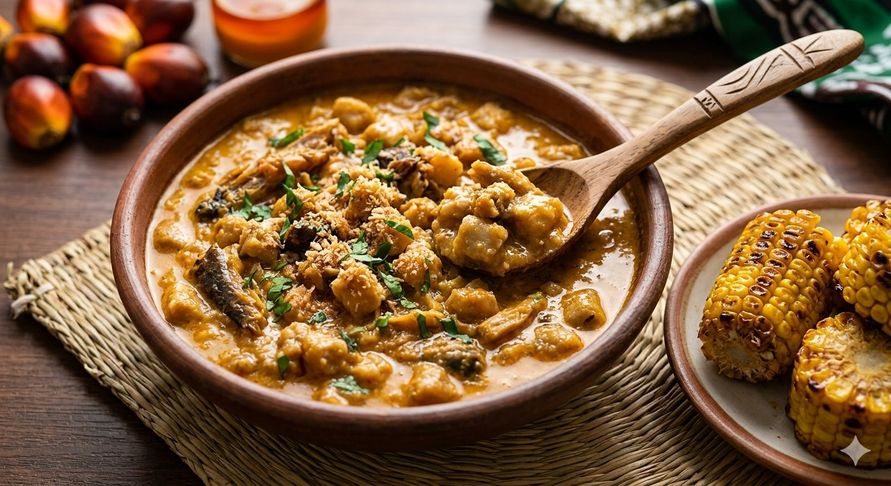

To prepare Ukwa, first clean and thoroughly wash the African breadfruit seeds until the water runs clear. Place them in a large pot and add enough water to cover them completely. Since fresh Ukwa is extremely tough, you must add a small amount of potash (akanwu) or palm bunch ash (ngu) to the boiling water to act as a softening catalyst. Allow the Ukwa to boil on high heat until the seeds are completely tender and soft—a process that can take over an hour. Once the seeds are tender and the water has been largely absorbed (forming a creamy natural sauce), add the blended peppers, ground crayfish, ogiri okpei, and cleaned dry fish. Next, stir in the red palm oil, but only enough to tint the sauce; it should be rich but not oily. Adjust the salt and seasoning, and allow everything to simmer together for an additional 10–15 minutes until the flavors fuse. If you are serving it with boiled corn, you can stir it in now or serve it separately.